nmc_verification 开源库技术文档(初步版1.0.1)
nmc_verification项目是采用python语言进行开发设计，主要提供气象方面的产品检验相关程序。该项目的整体设计自下而上分别是基础函数层、检验基础算法库、检验产品制作方法库、自动报告程序库四层。如图：1-1所示。
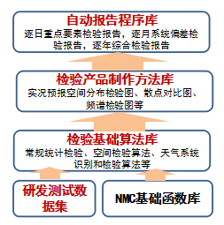
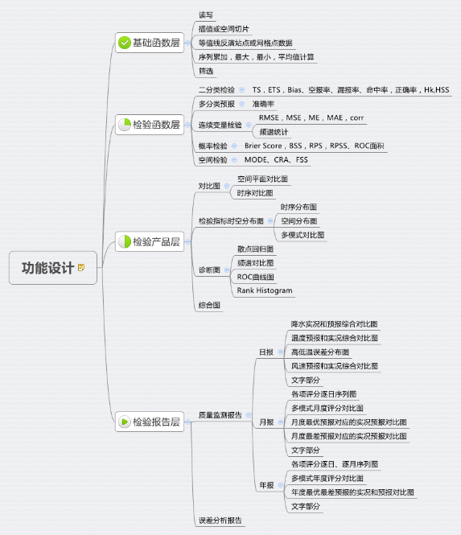
图1-1
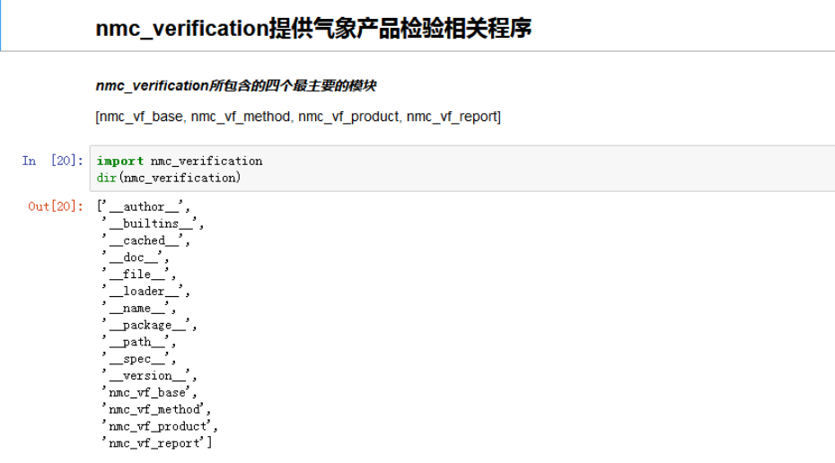
进入第一层查看所包含的功能模块：一些基本的常量设置
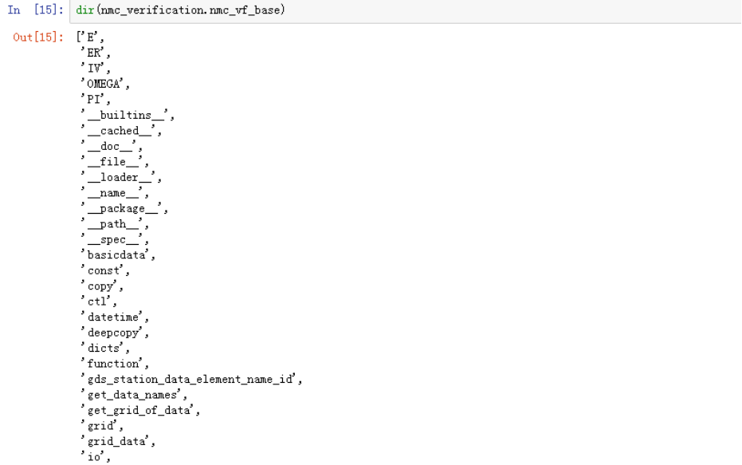
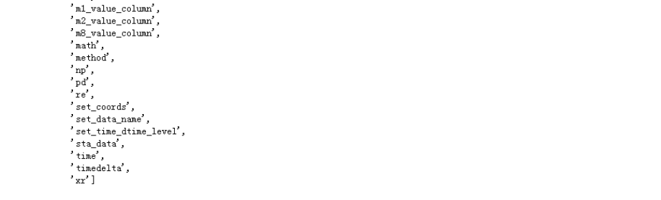
查看第二层所包含的模块：包含站点和格点处理方法函数
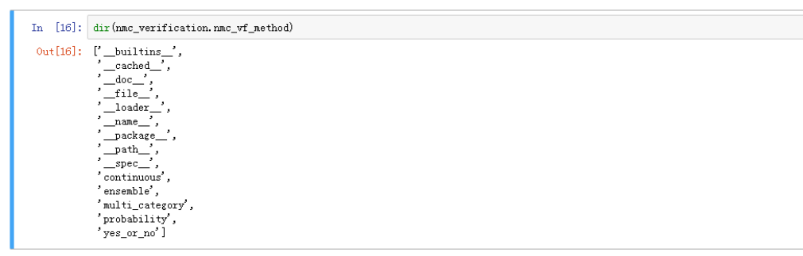
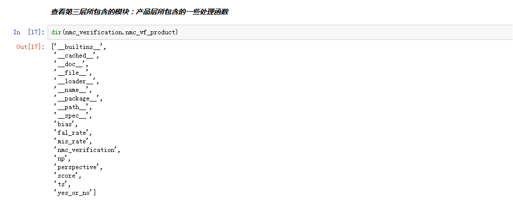
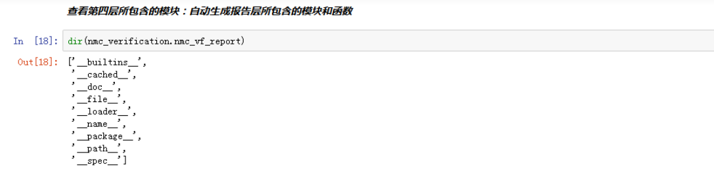
1.nmc_vf_base基础函数库
1.1 Basicdata
1.1.1 const
添加一些基本常量
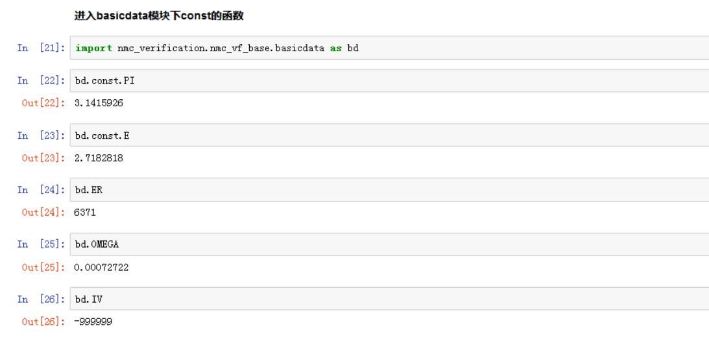
1.1.2 ctl
创建一个类ctl,并初始化一些变量。
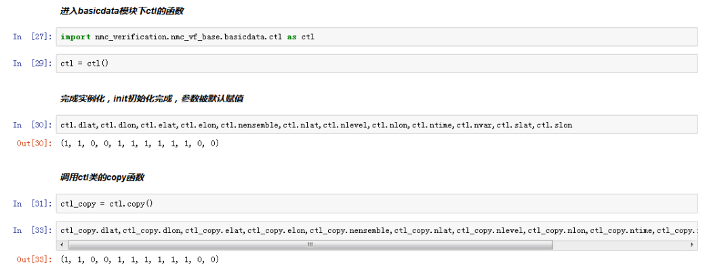
1.1.3 dicts
格点和站点的数据要素名字使用字典的方式映射为相应的数字。
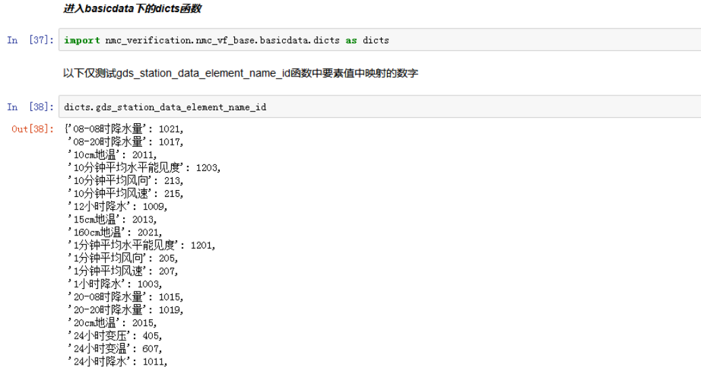
MICAPS1的要素值使用相应的数字映射
待完善
MICAPS2的要素值使用相应的数字映射
待完善
MICAPS8的要素值使用相对的数字映射
待完善
1.1.4 grids
定义一个格点的类grid，来存储网格的范围包括（起始经纬度、格距、起止时间，时间间隔，起止时效，时效间隔，层次列表，数据成员）。约定坐标顺序为: member, time,ddtime, level, lat,lon。
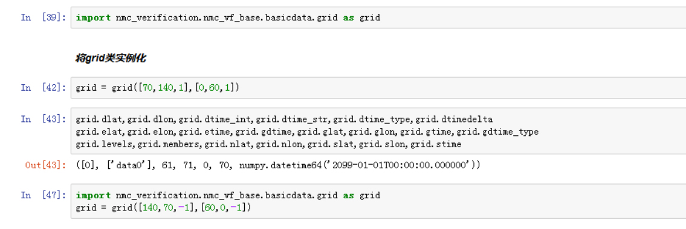
对原有的格点数据进行一次深拷贝，不改变原有的值和结构。
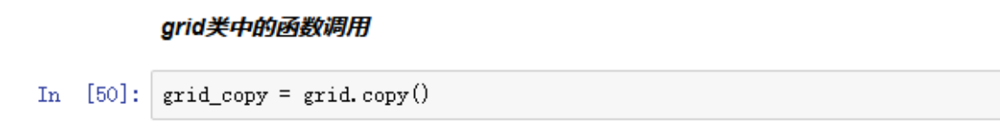
reset的作用是把网格的坐标间隔统一为正数。
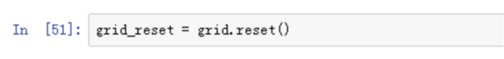
tostring 的作用是重置系统自动的函数，在print(grid) 的时候可以很整齐的看到所有信息
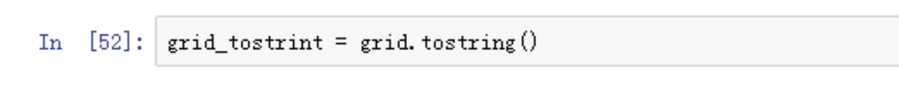
获取grid的数据values值：:param grid_data0:初始化之后的网格数据
:return:返回grid数据。
待完善
1.1.5 grid_data
设置xarray的coords的一些属性
:param grd:初始化之后的xarry结构的多维格点网格
:param level:层次，默认为None
:param time：时间，默认为None
:param dtime:时效，默认为None
:param member：要素，默认为None
如果level不为None，并且grd的level维度上size = 1，则将level方向的坐标统一设置为传入的参数level,time,dtime,member一样类似处理。
:return:grd:返回一个设置好的coords的格点网格信息。
返回一个DataArray，其维度信息和grid描述一致，数组里面的值为0.

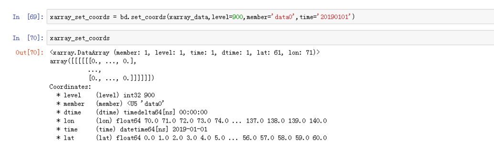
1.1.6 sta_data
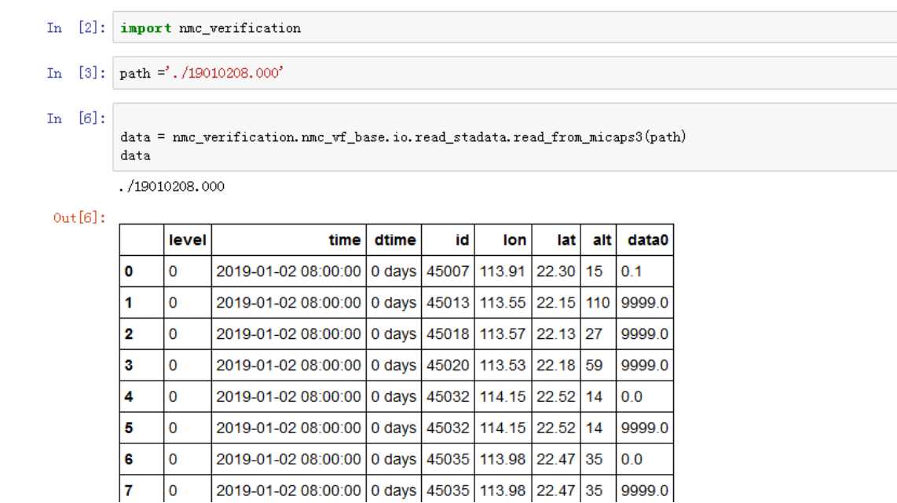
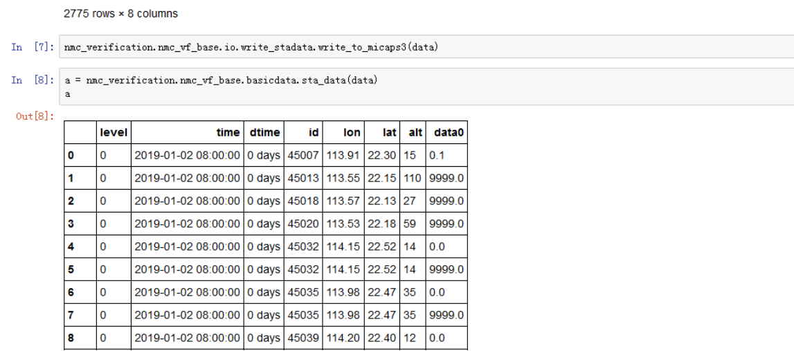
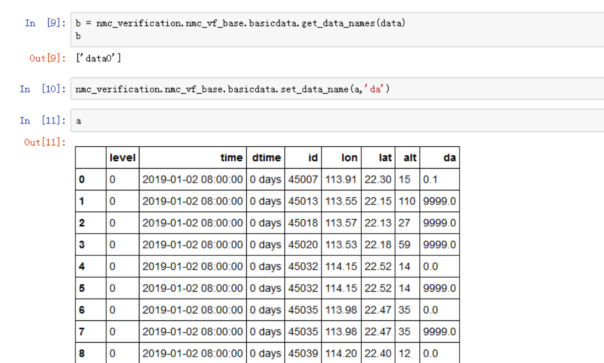
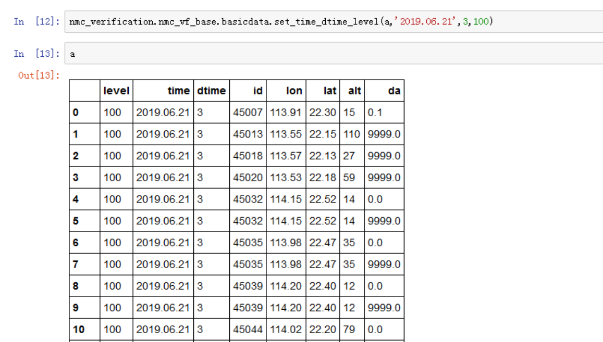
1.2 Function
2.1.1 get_from_grid_data
格点网格的切分、分片
:param grd_from:源网格信息
:param grd_to:需要映射的目标网格信息
:return:两个网格的重合部分，并赋值返回。
# 首先根据grid_to定一个初始的网格场grd_to，并且将取值都设为缺省
# 然后从grd_from里面找到两个网格重合的区域的那部分取值，将其赋值到grd_to
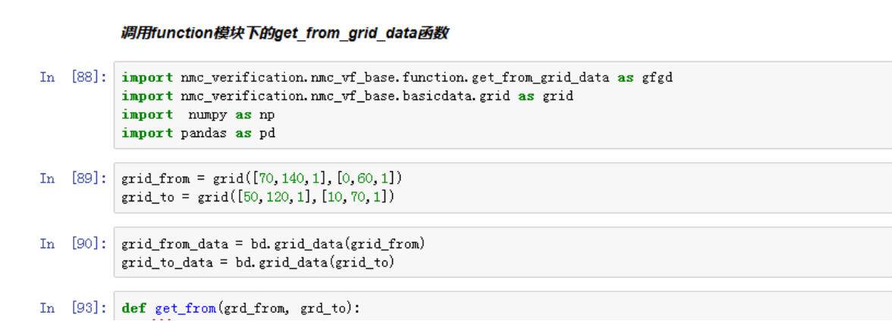
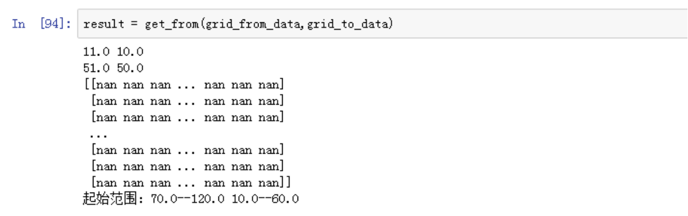
2.1.2 get_from_sta_data
为站点数据中dataframe重新赋列名
为拥有多元素值的站点数据，在最后依次增加要素值的列表名
为站点信息重新赋level名称
为拥有多level层的站点数据，依次增加level层所表示的list列表
为站点信息重新赋id名称
为拥有多id的站点数据，依次增加id所表示的list列表
为站点信息重新赋time层名称
为拥有多time层的站点数据，依次增加time层所表示的list列表
为拥有多year的站点数据，依次增加year所表示的list列表
为拥有多month的站点数据，依次增加month所表示的list列表
为拥有多xun的站点数据，依次增加xun所表示的list列表
为拥有多hou的站点数据，依次增加hou所表示的list列表
为拥有多day的站点数据，依次增加day所表示的list列表
为拥有多hour的站点数据，依次增加hour所表示的list列表
空函数，
为拥有多dtime的站点数据，依次增加dtime所表示的list列表
待完善
为拥有多dday的站点数据，依次增加dday所表示的list列表
为拥有多dhour的站点数据，依次增加dhour所表示的list列表
为拥有多dminute的站点数据，依次增加minute所表示的list列表
返回的dtime在start_dtime和end_dtime之间
返回的lon在slon和elon之间
返回的lat在slat和elat之间
返回的alt在salt和ealt之间
返回站点经纬度正好落在格点中的站点信息
返回站点参数字典列表
2.1.3 gxy_gxy
格点到格点插值
:param grd:左边的网格数据信息
:param grid :右边的网格数据信息
:other_info:网格数据除了xy方向的数值之外，还有time,dtime，leve member 等维度的值，如果other_info= 'left’则返回结果中这些维度的值就采用grd里的值，
否则采用grid里的值，默认为：left
:return:双线性插值之后的结果
将插值之后的多个结果在原有存储数据结构的基础上进行追加。
:param grd1:左边的网格数据信息
:param grd1 :右边的网格数据信息
:other_info:网格数据除了xy方向的数值之外，还有time,dtime，leve member 等维度的值，如果other_info= 'left’则返回结果中这些维度的值就采用grd里的值，
否则采用grid里的值，默认为：left
:return:多个网格数据双线性插值之后的结果的追加
2.1.4 gxy_sxy
格点转换为站点
格点到站点的插值
双线性格点到站点的插值
三维格点到站点的插值
2.1.5 gxym_gxy
获取num层的网格数据
获取网格数据的平均值
2.1.6 put_into_grid_data
两个格点网格信息的切片
:param ged_from:源网格信息
:param grd_to:目标网格信息
:return:返回一个带有grd_to信息的多维xarray数据结构的网格信息
比如grd_from 的网格范围是 10-20,110-150,
grd_to的网格范围是 0-30,70-120，这时后者的网格范围就不能覆盖前者，
如果后者范围是 0-30,70-150，则后者就能够覆盖前者。
这是一比方，具体的问题包含6个维度，每个纬度都要判断一下后者的最大最小值是否能包含前者。
如果不能包含就扩大到能包含，扩出来的部分先赋缺省值
如果原来就能包含，就直接把那一块区域的值用grd_from代替
根据grd_form中的坐标信息,判断grd_to 的坐标系能否覆盖前者
如果能：
把grd_from 中的数据覆盖掉grd_to中相同的网格部分
如果不能：
在grd_to中将坐标范围扩展成能覆盖前者，扩展出来的网格区域先设置为9999
再将grd_from中的值覆盖掉grd_to中相同的网格部分
2.1.7 put_into_sta_data
两个站点信息合并为一个，在原有的dataframe的基础上增加行数
两个站点信息合并为一个，以站号为公共部分，在原有的dataframe的基础上增加列数
2.1.8 sxy_gxy
将站点形式的规则网格的数据转化为格点数据
:param sta:站点数据
:param dlon 经度精度
:param dlat 纬度经度
:return:返回格点网格数据
站点到格点的反距离插值，对每个格点，获取其最近的几个站点编号、距离, 然后计算权重和。
站点到格点转换
2.1.9 sxy_sxy
将两个站点数据信息进行合并，并去重。
给站点信息的dataframe中的列名重新设置默认值
删除dataframe的nan值
将两个站点dataframe相加在一起
两个站点dataframe相减
两个dataframe相乘
1.3 Io
1.3.1 read_griddata
规范化格点（起始经纬度，间隔经度，格点数）
:param slon:起始经度
:param dlon:经度的精度
:param elon:结束经度
:param slat:起始纬度
:param dlat:纬度的精度
:param elat:结束纬度
:return:slon1,dlon1,elon1,slat1,dlat1,elat1,nlon1,nlat1
返回规范化后的格点信息。
读取micaps4格式的格点数据，并将其保存为xarray中DataArray结构的六维数据信息
:param filename:Micaps4格式的文件路径和文件名
:param grid:格点的经纬度信息，默认为：None,如果有传入grid信息，需要使用双线性插值进行提取。
:return:返回一个DataArray结构的六维数据信息da
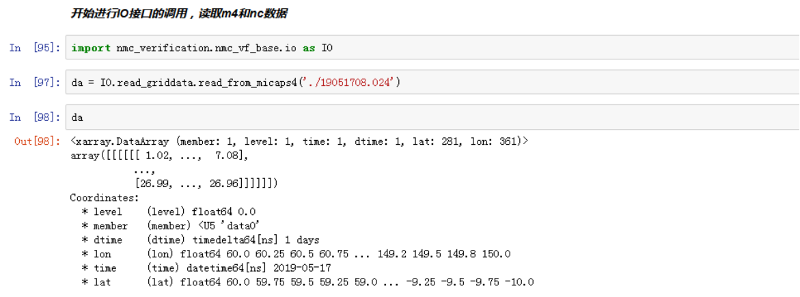
读取NC文件，并将其保存为xarray中DataArray结构的六维数据信息
:param filename:NC格式的文件路径和文件名
:param value_name:nc文件中要素name的值,默认：None
:param member:要素名,默认：None
:param level:层次,默认：None
:param time:时间,默认：None
:param dt:时效,默认：None
:param lat:纬度,默认：None
:param lon:经度,默认：None
:return:返回一个DataArray结构的六维数据信息da1
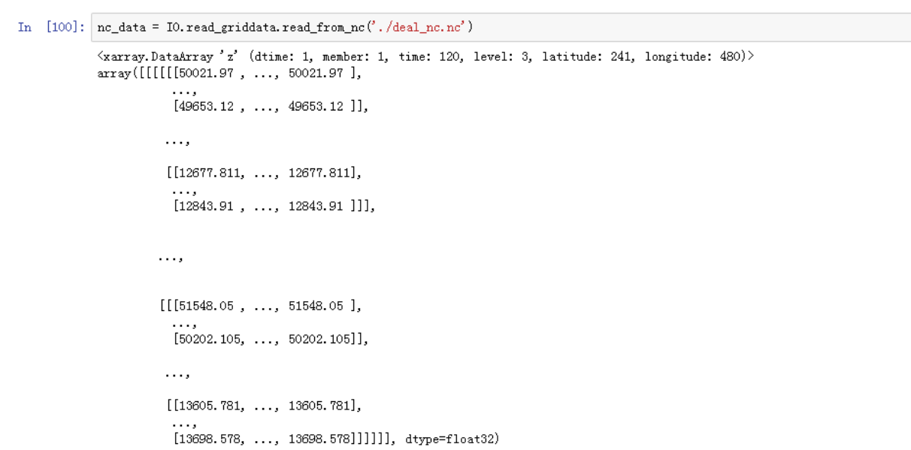
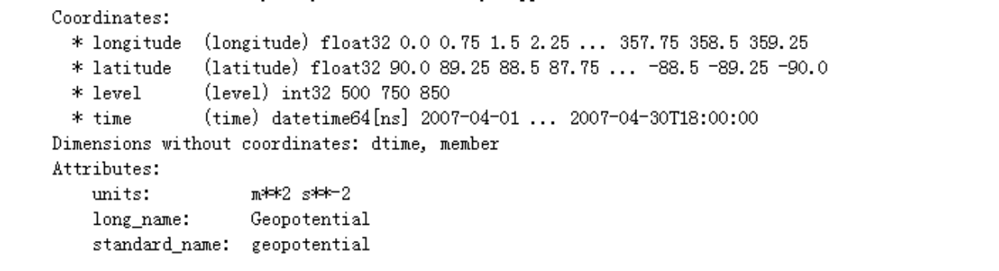
1.3.2 Read_stadata
读取micaps3格式文件转换为pandas中dataframe结构的数据
:param station:站号，默认：None
:param reserve_time_dtime_level:保留时间，时效和层次，默认为rue
:param data_name:dataframe中数值的values列的名称
:return:返回一个dataframe结构的多列站点数据。
读取站点数据
:param filename:带有站点信息的路径已经文件名
:param columns 列数
：skiprows:读取时跳过的行数，默认为：0
:return:返回带'level','time','dtime','id','lon','lat','alt','data0'列的dataframe站点信息。
1.3.3 Write_griddata
输出micaps4格式文件
:param da:xarray多维数据信息
:param path:存储路径
:param effectiveNum 有效数字 默认：6
:return 最终按照需要保存的路径，将da数据保存为m4格式
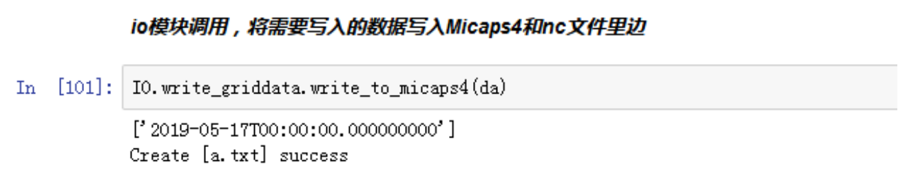
write_to_nc

1.3.4 Weite_stadata
生成micaps3格式的文件
:param sta0:站点数据信息
:param filename 需要保存的文件路径和名称
:param type 类型：默认：1
:param effectiveNum 有效数字 默认为：4
:return:保存为micaps3格式的文件
1.4 Tool
1.4.1 frprmn2
待完善
1.4.2 Math_tools
reset_max_min
根据经纬度计算距离，然后开平方根
根据经纬度计算距离
经度纬度信息转换为直角坐标系
1.4.3 Path_tools
获取路径
1.4.4 Time_tools
时间格式的转换
2.Nmc_vf_method检验基本算法
2.1Continuous
2.1.1 Plot
#批量测试降水、温度等要素的绘图结果，获取一组最佳样式
'''
scatter_regress 画一张带有回归线的实况和预报数据的散点图，
:param ob: 实况数据 一维的numpy
:param fo:预测数据 一维的numpy
:param save_path: 保存数据的地址
:param scattercolor:散点颜色
:param scattersize:散点的大小
:param x_label: 横坐标的名字
:param y_label: 纵坐标的名字
:param fontsize: 横纵坐标的名字字体大小
:param line_color:回归线的颜色
:return:
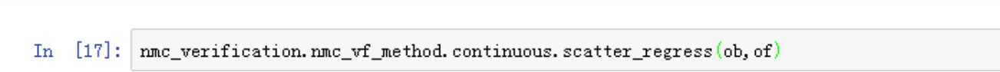
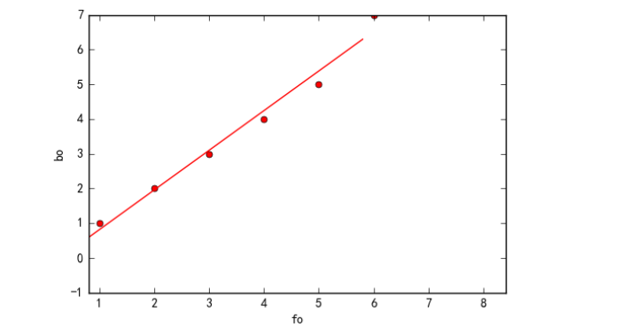
sorted_ob_fo 将传入的两组数据先进行排序
然后画出折线图
----------------
:param ob: 实况数据 一维的numpy
:param fo:预测数据 一维的numpy
:param save_path: 保存图片的路径
:return:
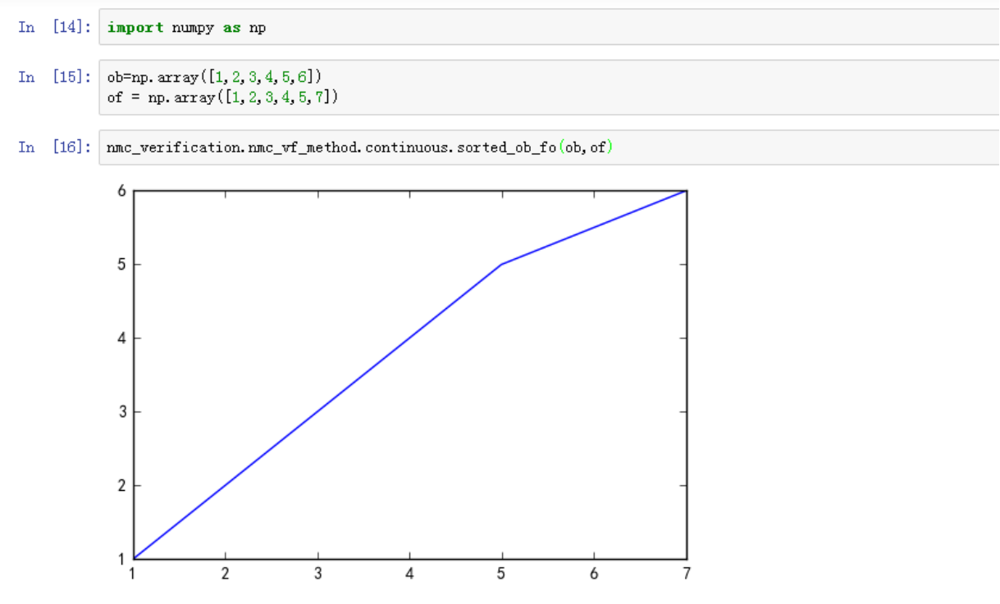
box_plot 画一两组数据的箱型图
---------------
:param observed:实况数据 一维的numpy
:param forecast:预测数据 一维的numpy
:param save_path: 保存数据的路径
:param x_lable: 横坐标的标签
:param y_lable:纵坐标标签
:param title: 图片名字
:return:
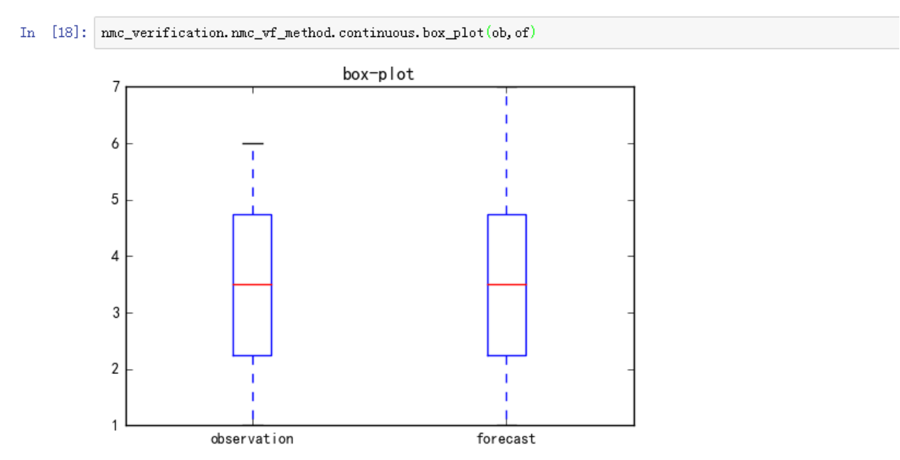
2.1.2 Score
me 求两组数据的误差平均值
-----------------------------
:param Ob: 实况数据 一维numpy
:param Fo:预测数据 一维numpy
:return:
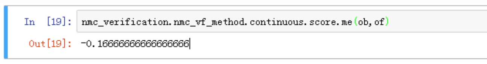
mae对两组数据求平均绝对值误差
-----------------------
:param Ob:实况数据 一维numpy
:param Fo:预测数据 一维numpy
:return: mean_abs_error
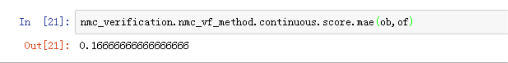
mse 求两组数据的均方误差
----------------------------------
:param Ob:实况数据 一维numpy
:param Fo:预测数据 一维numpy
:return: mean_sqrt_error
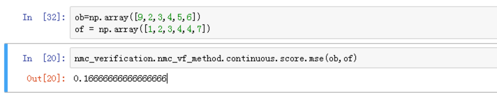
rmse 求两组数据的均方根误差
------------------------------
:param Ob:实况数据 一维numpy
:param Fo:预测数据 一维numpy
:return:mean_sqrt_error
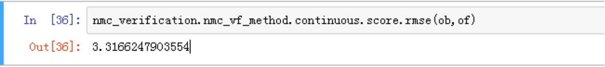
bias 求预测数据和实况数据的平均值的比
------------------------------
:param Ob:实况数据 一维numpy
:param Fo:预测数据 一维numpy
:return: bias0
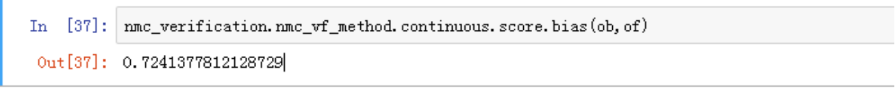
corr 求实况数据还和预测数据之间的相关系数
-----------------------------
:param Ob: 实况数据 不定长维度的numpy
:param Fo: 测试数据 不定长维度的numpy
:return: corr0
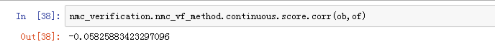
2.1.3 table
待完善
2.2 ensemble
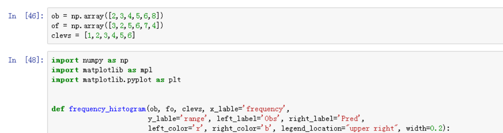
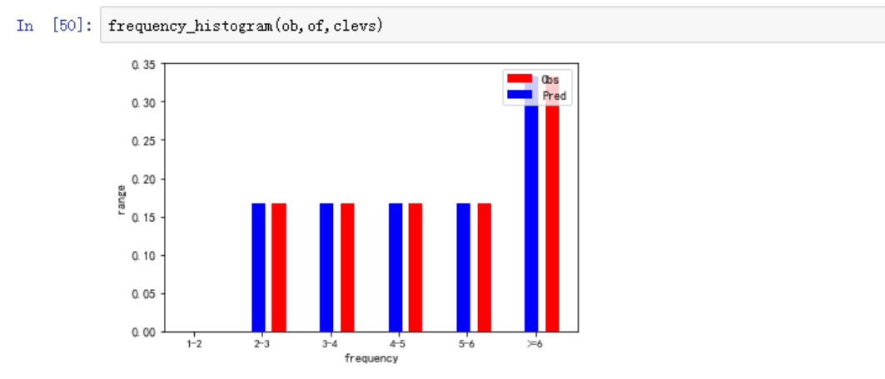
2.2.1 plot
待完善
2.2.2 score
待完善
2.2.3 table
待完善
2.3 multi_category
2.3.1 plot
待完善
2.3.2 score
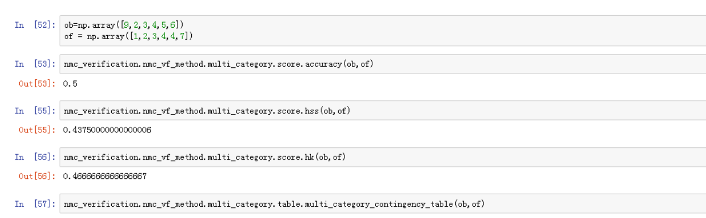
2.3.3 table
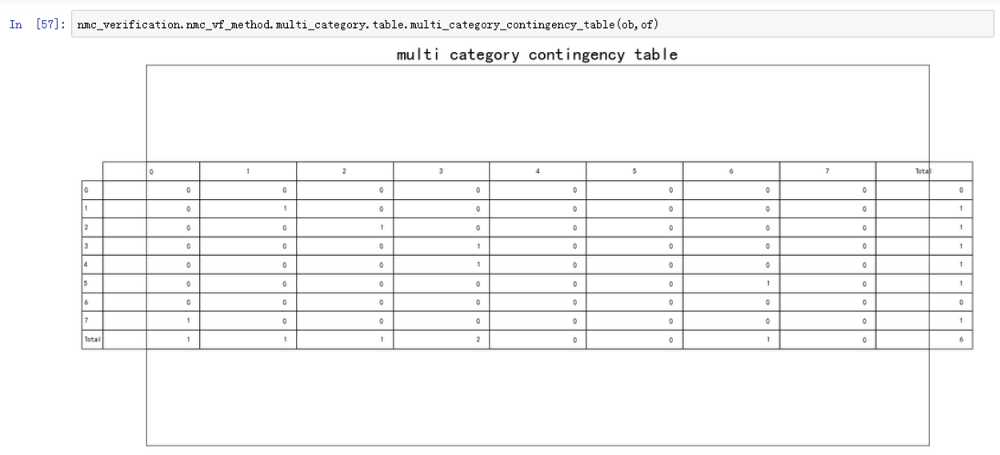
2.4 probability
2.4.1 plot
reliability_diagrams 可靠性图
----------------------------
:param ob: 实况数据 一维numpy
:param fo: 预测数据 一维numpy
:param grade_list: 等级
:param save_path: 保存地址
:param diagona_color:理想线颜色
:param regression_line_color: 回归线颜色
:param broken_line_color: 折线颜色
:return:
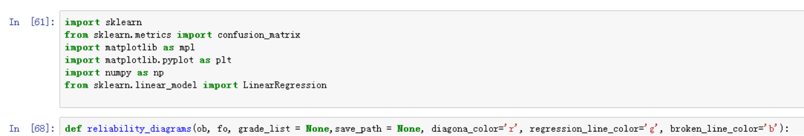
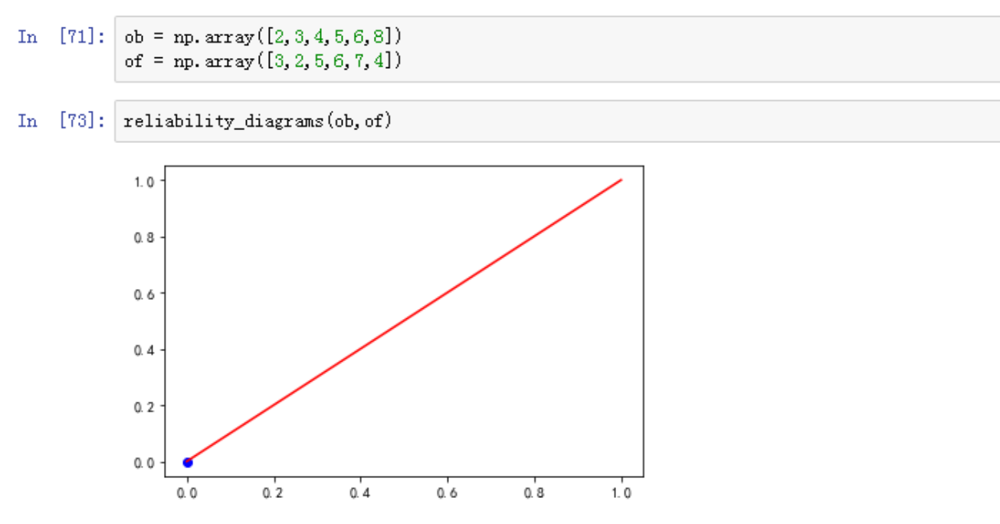
2.4.2 score
待完善
2.4.3 table
待完善
2.5 yes_or_no
2.5.1 plot
待完善
2.5.2 score
hit_rate 求出命中率
----------------------
:param Ob: 实况数据 一维numpy
:param Fo: 预测数据 一维numpy
:param grade_list: 等级
:return:
#输入观测Ob和预报Fo的预报数据（1维的numpy数组），以及判断事件是否发生的阈值threshold，
# 返回一维命中率评分值数组，数组中的每个值对应一个等级
#如果threshold_list ==None，则说明Ob,Fo是0或1组成的数组
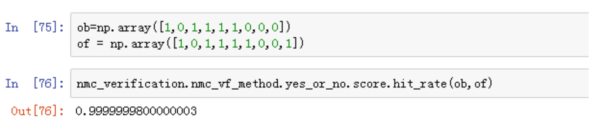
fal-rate 求出误报率
------------------
:param Ob: 实况数据 一维numpy
:param Fo: 预测数据 一维numpy
:param grade_list: 等级
:return:
#输入观测Ob和预报Fo的预报数据（1维的numpy数组），以及判断事件是否发生的阈值threshold，
# 返回一维空报率评分值数组，数组中的每个值对应一个等级
# 如果threshold_list ==None，则说明Ob,Fo是0或1组成的数组
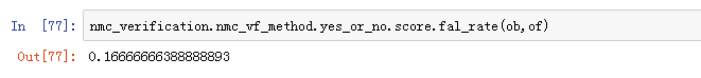
mis_rate 漏报率评分
--------------------------
:param Ob: 实况数据 一维numpy
:param Fo: 预测数据 一维numpy
:param grade_list: 等级
:return:
#输入观测Ob和预报Fo的预报数据（1维的numpy数组），以及判断事件是否发生的阈值threshold，
# 返回一维漏报率评分值数组，数组中的每个值对应一个等级
# 如果threshold_list ==None，则说明Ob,Fo是0或1组成的数组
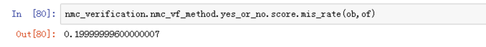
bias bias评分
----------------
:param Ob: 实况数据 一维numpy
:param Fo: 预测数据 一维numpy
:param grade_list: 等级
:return:
#输入观测Ob和预报Fo的预报数据（1维的numpy数组），以及判断事件是否发生的阈值threshold，
# 返回一维bias评分值数组，数组中的每个值对应一个等级
# 如果threshold_list ==None，则说明Ob,Fo是0或1组成的数组
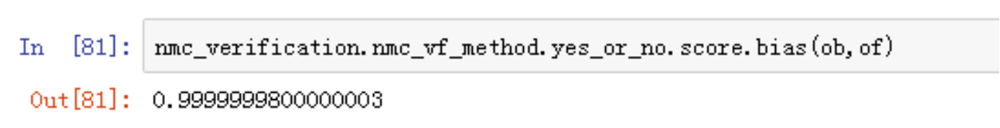
ts ts评分
---------------
:param Ob: 实况数据 一维numpy
:param Fo: 预测数据 一维numpy
:param grade_list: 等级
:return:
#输入观测Ob和预报Fo的预报数据（1维的numpy数组），以及判断事件是否发生的阈值value，
# 返回一维ts评分值数组，数组中的每个值对应一个等级
# 如果threshold_list ==None，则说明Ob,Fo是0或1组成的数组
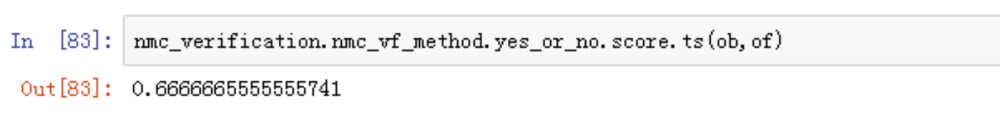
ts hmfn评分
----------------
:param hit: 命中数
:param mis: 空报数
:param fal: 漏报数
:return:
'''
# 输入命中、空报、漏报数
# 返回一维ts评分值数组，数组中的每个值对应一个等级
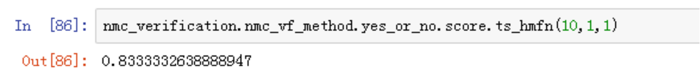
ets ets评分
----------------
:param Ob: 实况数据 一维numpy
:param Fo: 预测数据 一维numpy
:param grade_list: 等级
:return:
#输入观测Ob和预报Fo的预报数据（1维的numpy数组），以及判断事件是否发生的阈值value，
# 返回一维ets评分值数组，数组中的每个值对应一个等级
# 如果threshold_list ==None，则说明Ob,Fo是0或1组成的数组
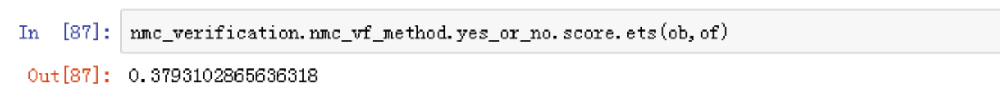
ets_hmfn ets_hmfn评分
-----------------
:param hit: 命中数
:param mis: 空报数
:param fal: 漏报数
:param cn: 正确否定数
:return:
# 输入命中数、空报数、漏报数、正确否定数
# 返回一维ets评分值数组，数组中的每个值对应一个等级
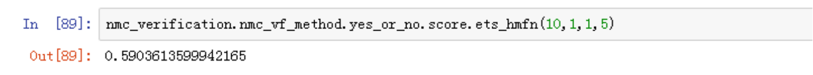
hmfn hmfn评分
----------------
:param Ob: 实况数据
:param Fo: 预测数据
:param threshold_list:阈值列表
:return:
# 输入观测Ob和预报Fo的预报数据（1维的numpy数组）
#返回命中数、空报数、漏报数、正确否定数共4个数组，数组中的每个值对应一个等级
2.5.3 table
contingency_table 用来画一张二分类预测列联表
-------------------------------------
:param ob: 实况数据
:param fo: 预测数据
:param threshold_list: 阈值列表
:param save_path: 保存路径
:param figsize:
:param x_label: x方向标签
:param y_label: y方向标签
:param title: 标题
:param fontsize: 字体大小
:param fontproperties: 字体
:param col_labels: 列标签
:param row_labels: 行标签
:return:
'''
# 扩展一下该函数的功能
# 当threshold_list 为None时，ob和fo里的取值默认是只为0或1的，否则根据threshold_list 里的阈值判断ob和fo里的元素是0或1，进一步绘图
#threshold_list 有多个取值时，每个表的title 需要显示等级的内容。
3 Nmc_vf_product检验产品制作方法库
3.1 Compare
3.1.1 space_compair
绘制24小时格点站点降水检验图
绘制24小时降水实况与预报对比图
3.2 perspective
3.2.1 sta_data_set
将参数数组转换为列表
通过指定参数获取站点信息
站点数据参数设置类
3.2.2 statistic_result_set
待完善
3.2.3 veri_plot_set
参数数组转换为列表
自动布局模块
透视表参数设置类
3.2.4 veri_result_set
检验结果设置类
类初始化一些默认参数
获取检验结果
保存检验结果
下载检验结果
3.3 score
3.2.1 yes_or_no
3.2.1.1 threshold_one
TS评分
3.4 yes_or_no
3.4.1 score
TS评分
计算偏差值Bias评分
漏报率
失败率
4.Nmc_vf_report自动报告生成程序库
待完善.....